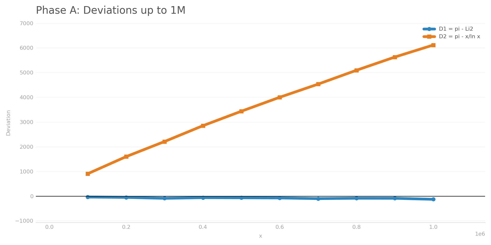
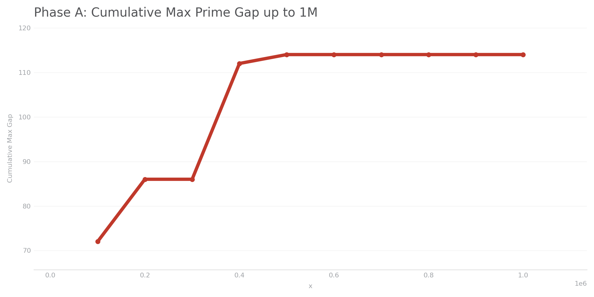
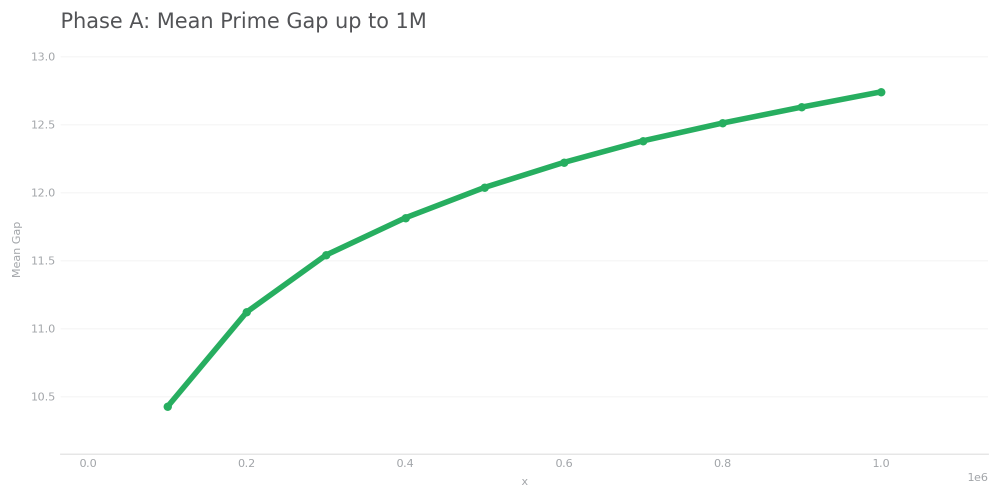

1. قرار الإغلاق
تم تثبيت جدول المليون أولًا، ليس بإعادة التجربة كاملة، بل بتدقيق إغلاق حسابي قصير. النسخة القديمة تُحفظ كأرشيف، والنسخة المصححة هنا هي خط الأساس الرسمي للمرحلة B.
منهج ثابت: التراكم، الكثافة المحلية، الفجوات، الانحراف عن مرجعين. لا تغيير في التعريفات عند الانتقال إلى المرحلة B.
2. تدقيق الإغلاق — التحقق المستقل
أُعيد حساب العدّ مباشرة بغربال مستقل حتى مليون، وتأكدت نقاط التراكم الرئيسية وتوزيع الفجوات. العدّ الأساسي سليم.
| المؤشر | نتيجة التحقق | الحالة |
|---|---|---|
| π(100,000) | 9,592 | ✓ مطابق |
| π(200,000) | 17,984 | ✓ مطابق |
| π(500,000) | 41,538 | ✓ مطابق |
| π(1,000,000) | 78,498 | ✓ مطابق |
| الفجوة 6 — الأكثر تكرارًا | 13,549 | ✓ |
| الفجوة 2 | 8,169 | ✓ |
| الفجوة 4 | 8,143 | ✓ |
| الفجوة 12 | 8,005 | ✓ |
| أكبر فجوة | 114 | ✓ |
492113 و 492227. لذلك ظهورها الأول ليس في نافذة 300–400 ألف، بل في نافذة 400–500 ألف. القيمة لم تتغير، لكن سجل الظهور الأول تصحح.3. التصحيح المرجعي المهم — Li₂(x)
أُعيد حساب التكامل نفسه:
وظهرت فروق صغيرة في القيم السابقة. لذلك تُعتمد القيم التالية بدلًا منها. التصحيح لا يغير الصورة العامة، لكنه يغير مقادير الانحراف ومراحل التذبذب.
| x | π(x) | Li₂(x) المصححة | D₁ = π − Li₂ المصحح | D₁ % | ΔD₁ |
|---|---|---|---|---|---|
| 100,000 | 9,592 | 9,628.764 | −36.764 | −0.3833% | — |
| 200,000 | 17,984 | 18,035.007 | −51.007 | −0.2836% | −14.243 |
| 300,000 | 25,997 | 26,085.647 | −88.647 | −0.3410% | −37.640 |
| 400,000 | 33,860 | 33,921.577 | −61.577 | −0.1819% | +27.070 |
| 500,000 | 41,538 | 41,605.244 | −67.244 | −0.1619% | −5.667 |
| 600,000 | 49,098 | 49,171.782 | −73.782 | −0.1503% | −6.538 |
| 700,000 | 56,543 | 56,643.618 | −100.618 | −0.1780% | −26.836 |
| 800,000 | 63,951 | 64,036.252 | −85.252 | −0.1333% | +15.366 |
| 900,000 | 71,274 | 71,361.009 | −87.009 | −0.1221% | −1.757 |
| 1,000,000 | 78,498 | 78,626.504 | −128.504 | −0.1637% | −41.495 |
مثال عند المليون: D₁ = 78498 − 78626.504 = −128.504 وليس −128.5 التقريبي. الانحراف ما زال سالبًا، لكنه أقرب إلى الصفر مما كان سيظهر من القيمة القديمة.
الخلاصة المنهجية: D₁ لا يُعامل باعتباره رتيبًا؛ بل نحتفظ بتذبذباته. ΔD₁ موجب في نافذتين (+27.07 ، +15.37) وسالب في الباقي — هذا هو التذبذب المحلي رغم استمرار الاتجاه العام.
4. الكثافة المحلية — نوافذ متساوية 100,000
| النافذة [a,b) | العدد | ρ(a,b) | ḡ = 1/ρ |
|---|---|---|---|
| 0 – 100,000 | 9,592 | 0.09592 | 10.43 |
| 100,000 – 200,000 | 8,392 | 0.08392 | 11.92 |
| 200,000 – 300,000 | 8,013 | 0.08013 | 12.48 |
| 300,000 – 400,000 | 7,863 | 0.07863 | 12.72 |
| 400,000 – 500,000 | 7,678 | 0.07678 | 13.02 |
| 500,000 – 600,000 | 7,560 | 0.07560 | 13.23 |
| 600,000 – 700,000 | 7,445 | 0.07445 | 13.43 |
| 700,000 – 800,000 | 7,408 | 0.07408 | 13.50 |
| 800,000 – 900,000 | 7,323 | 0.07323 | 13.66 |
| 900,000 – 1,000,000 | 7,224 | 0.07224 | 13.84 |

5. الانحرافات — الصورة المصححة

نسبة الانحراف D₁% تحسنت إجمالًا من −0.383% إلى −0.164% رغم التذبذب في القيمة المطلقة.
6. الفجوات


أكبر فجوة: 114 بين 492113 و 492227 — في نافذة 400–500 ألف. لم تتغير في آخر 500 ألف كاملة.
الفجوات الأكثر تكرارًا: 6 (13,549) ، 2 (8,169) ، 4 (8,143) ، 12 (8,005).
7. المرحلة B — ما الذي سنراقبه؟
بنفس غربال إراتوستينس، ونفس تعريفات الكثافة والفجوات، ونفس المرجعين. المتغير الذي يستحق التركيز الآن هو:
لأننا اكتشفنا أن D₁ ليس مسارًا هابطًا منتظمًا، وإنما مسار ذو تذبذبات محلية، وأن تصحيح القيم عند المليون غيّر مقدار الانحراف النهائي.
قاعدة الاستقلال: البيانات = العدّ الفعلي. المقاييس = الكثافة والفجوات. المراجع = Li₂ و x/ln x. الاستنتاج يُكتب بعد ظهور النتائج، وليس قبلها.